Specialities
All specialities
Thirty-six specialities across the network, each with its own doctors, procedures and branches.
Photo: Badr Al Samaa Group36 specialities
ENT
The ENT (Ear, Nose & Throat) Department at Badr Al Samaa provides comprehensive diagnostic, medical, and surgical care for disorders affecting the ear, nose, throat, head, and neck. Supported by experienced ENT specialists and advanced diagnostic technology, the department delivers personalized treatment for patients of all age groups, from children to adults.
ExploreDentistry
Services include dental implants, dentures, sensitive teeth care, crowns & bridges, extraction/fillings, teeth whitening, RCT, gum treatment (pyorrhoea), dental jewellery, dental cleaning and bad breath elimination. Other services include surgical extraction of impacted teeth, periapical surgery, cyst enucleation, facial trauma management and jaw correction surgery.
Explore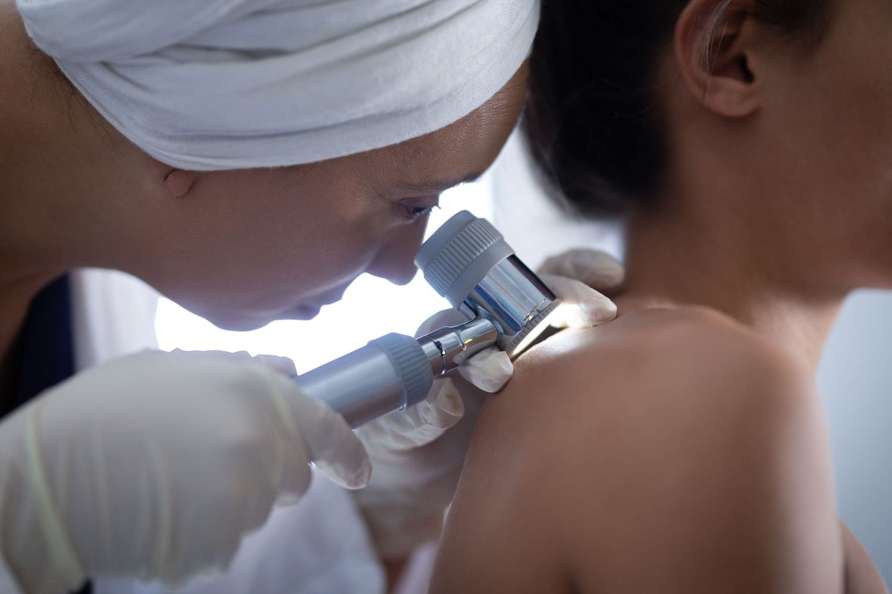
Photo: Badr Al Samaa GroupDermatology
The Dermatology Department at Badr Al Samaa provides comprehensive medical, surgical and cosmetic dermatology services for patients of all ages. Our experienced dermatologists diagnose and treat a wide range of skin, hair, and nail disorders using advanced diagnostic techniques and evidence-based treatment approaches.
Explore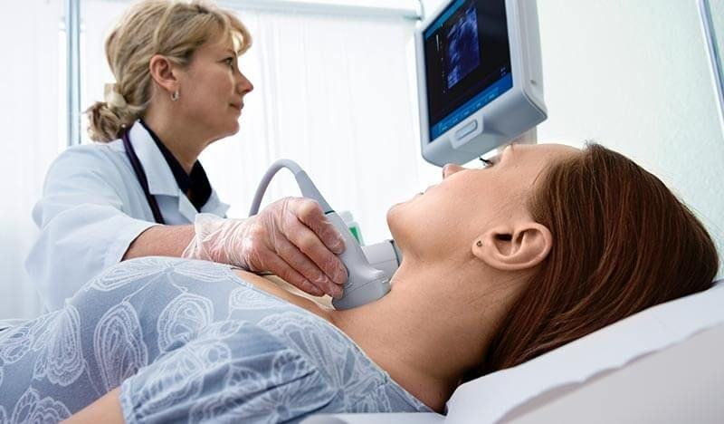
Photo: Badr Al Samaa GroupEndocrinology
Diagnosis and management of hormone-related disease conditions including diabetes, obesity, osteoporosis, hypo/hyper thyroidism, irregular menstruation, infertility, growth and puberty, hirsutism in females, pituitary and adrenal disorders, all come under the umbrella of Endocrine disease conditions.
ExploreGastroenterology
The specialists are expert in disorders like dysphagia, gastrointestinal bleeding, gastrointestinal cancers, liver cirrhosis,, liver failure, infectious hepatitis, portal hypertension, acute pancreatitis, jaundice, IBS, and chronic abdominal pain and diarrhoeas, etc. Patients are provided comprehensive services for the management of gastrointestinal, hepatobiliary and pancreatic diseases involving the gastrointestinal tract.
Explore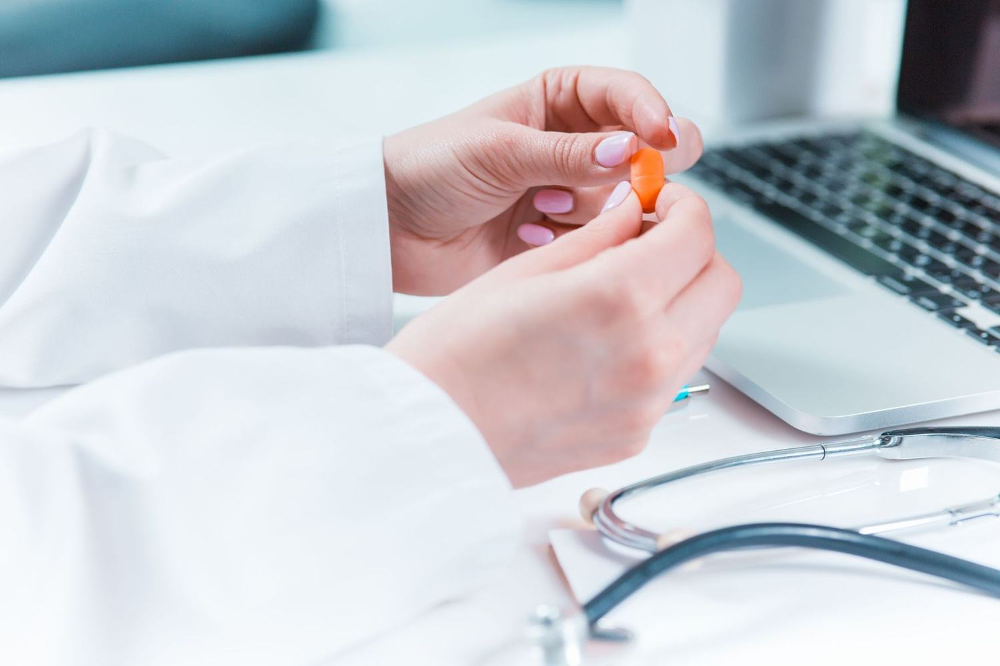
Photo: Badr Al Samaa GroupGeneral Medicine
The department offers round-the-clock emergency care and is equipped with critical care technology including ventilators and defibrillator. Aside from outpatient and inpatient facilities for adults, the department also offers comprehensive health check-up packages specifically tailored towards various health conditions, professions, gender and age groups.
Explore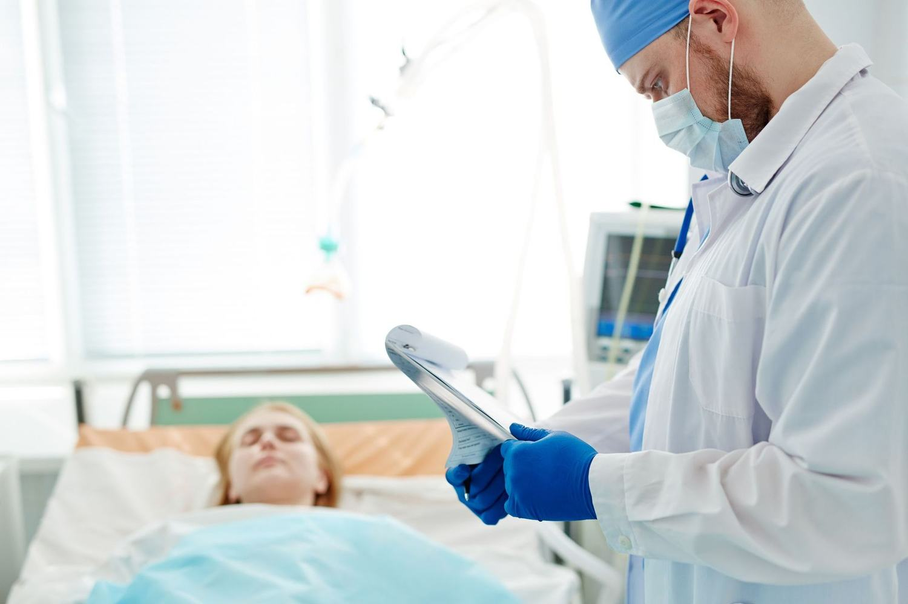
Photo: Badr Al Samaa GroupGeneral Practice
These expert physicians are involved in family medicine care, immunizations and handling of trauma cases. They are the first port of call for patients, and where required, they are referred to other specialists for in-depth care. General Practitioners are excellent at long-term medical care of patients, and include both children and adults.
Explore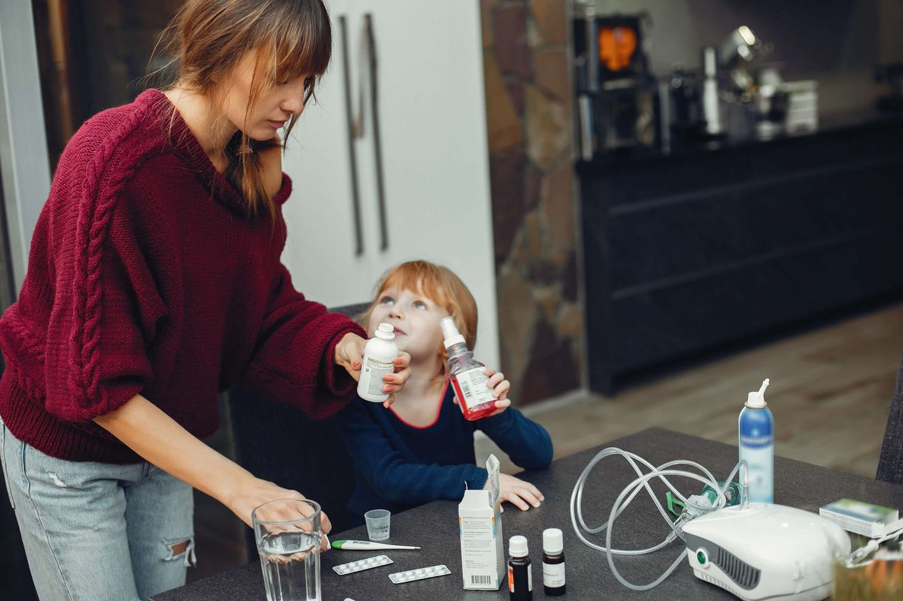
Photo: Badr Al Samaa GroupInternal Medicine
The Internal Medicine Department at Badr Al Samaa provides comprehensive medical care for adults, focusing on the prevention, diagnosis, treatment, and long-term management of a wide range of acute and chronic medical conditions. Our experienced physicians are dedicated to delivering evidence-based, patient-centred care tailored to each individual's health needs.
Explore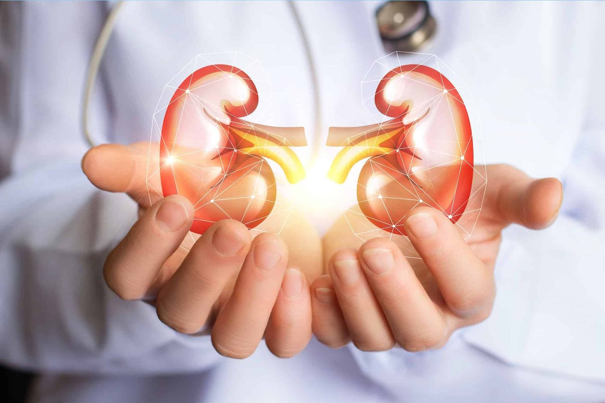
Photo: Badr Al Samaa GroupNephrology
The Nephrology Department at Badr Al Samaa Hospital provides comprehensive care for patients with kidney-related diseases, hypertension, and disorders affecting kidney function. Our experienced nephrology specialists are dedicated to the prevention, diagnosis, treatment, and long-term management of both acute and chronic kidney conditions, helping patients maintain better kidney health and overall well-being.
Explore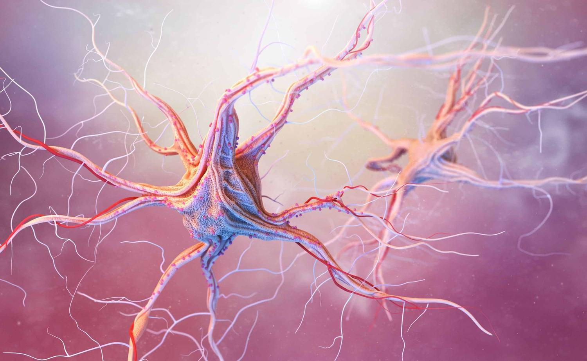
Photo: Badr Al Samaa GroupNeurology
The highly specialised services include management of stroke, epileptic fits, neuromuscular disorders, paralysis, chronic headaches and complicated migraines, vertigo, movement disorders and back pain. The department has a specialised stroke unit, a headache clinic as well as a Neuro ICU. With timely and expert treatment, most of our stroke patients have recovered and gone back to their professions.
Explore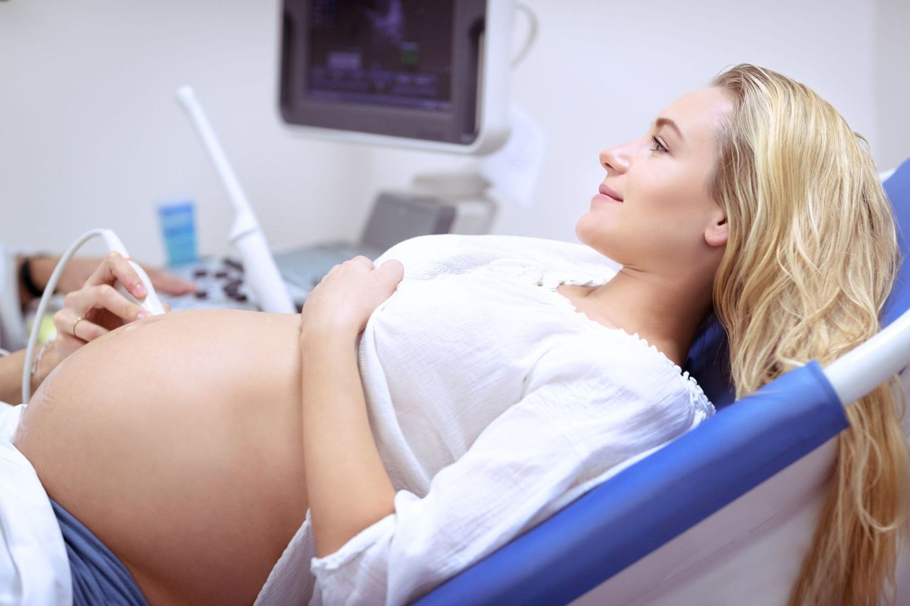
Photo: Badr Al Samaa GroupObstetrics & Gynaecology
The department offers antenatal and postnatal care, painless childbirth and management of high-risk pregnancies as well as family planning services. Open and laparoscopic surgical procedures for cysts, hysterectomies and C/S deliveries are routinely done too.
Explore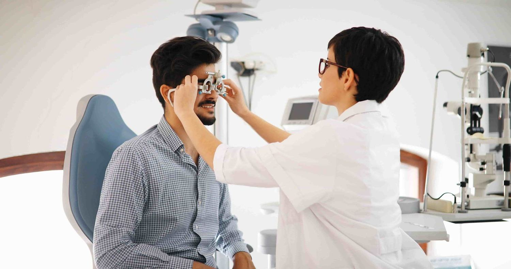
Photo: Badr Al Samaa GroupOphthalmology
The Ophthalmology Department at Badr Al Samaa provides comprehensive eye care services for patients of all ages, offering advanced diagnostic, medical, and surgical treatments for a wide range of eye conditions. Our experienced ophthalmologists are committed to preserving and improving vision through personalized care, modern technology, and evidence-based treatment approaches.
Explore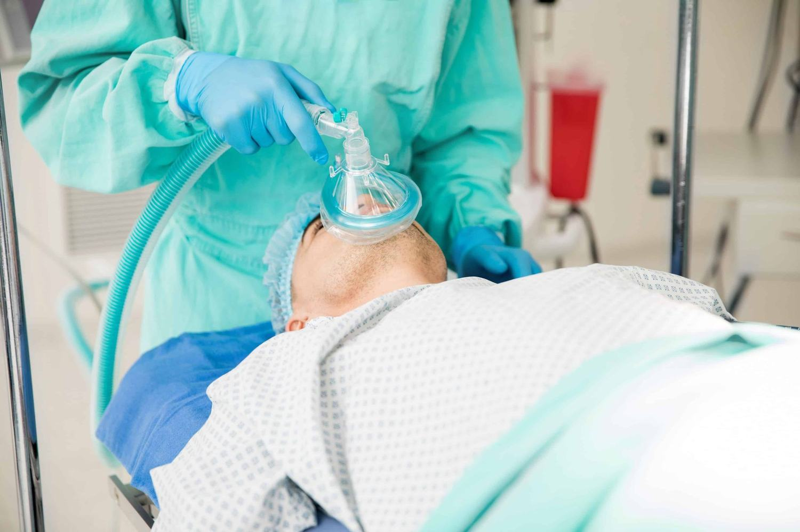
Photo: Badr Al Samaa GroupAnaesthesiology
The department is fully-equipped with anaesthesia machines, monitors, ventilators, safety gadgets and Continuous drug delivery systems. These machines are operated expertly by highly-skilled and experienced anaesthesiologists.
ExploreCardiology
The Cardiology Department at Badr Al Samaa Hospital provides comprehensive heart care services ranging from preventive cardiology and advanced diagnostics to interventional cardiology and cardiac critical care. Our experienced cardiologists, supported by modern technology and specialized cardiac care facilities, are dedicated to the prevention, early detection, diagnosis, and heart disease treatment for a wide range of cardiovascular diseases.
Explore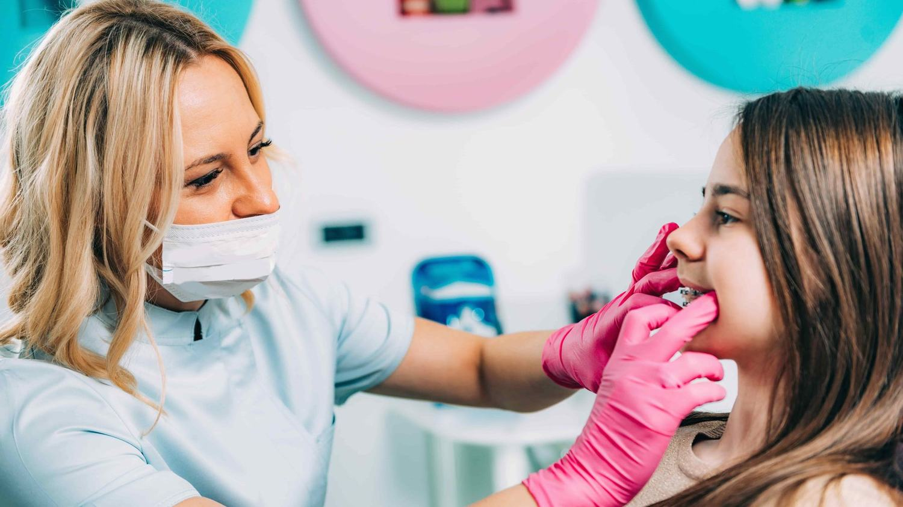
Photo: Badr Al Samaa GroupOrthodontics
Misalignment of teeth and jaw, overbites, underbites, crossbites, occlusions and overcrowded mouths are some of the conditions that a super specialised orthodontist treats. With people becoming more conscious of dental aesthetics and smile designing, our brilliant orthodontists are the experts to go to. They are experienced in creating fixed and removable braces as well as invisible braces to straighten and align your teeth and correct how they work.
ExploreOrthopaedics
Our Orthopaedics, Joint Replacement & Spine Surgery Department provides comprehensive care for bone, joint, muscle, ligament, and spine conditions, helping patients regain mobility, reduce pain, and return to their daily activities with confidence.
Explore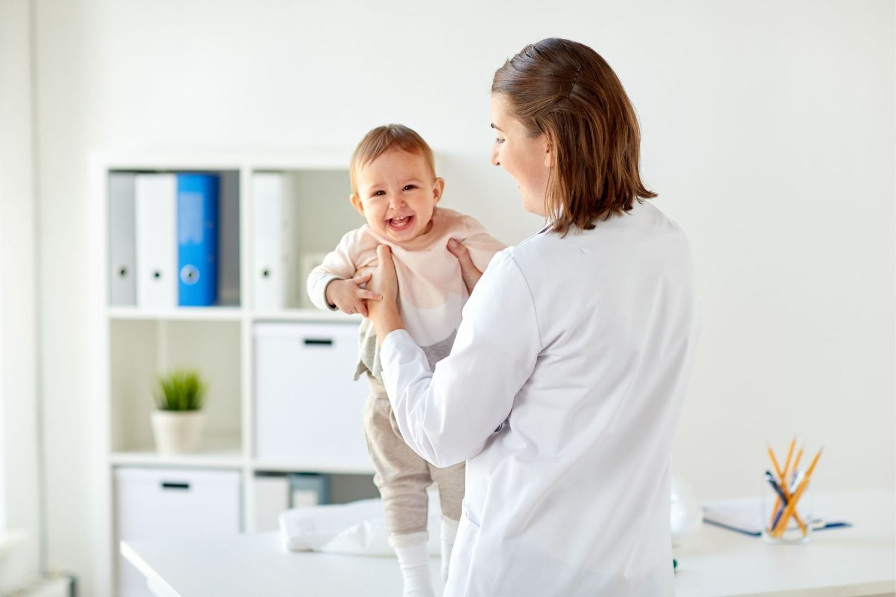
Photo: Badr Al Samaa GroupPaediatrics & Neonatology
Super specialised neonatal care is offered to preterm and sick newborns in the Neonatal ICU. Aside from having incubators that maintain complete sterility, resuscitation equipment, phototherapy facility and a vaccination centre, these special care baby units are taken care of by expert neonatologists.
ExplorePathology
Our full-fledged department boasts of labs for haematology, clinical pathology, cytopathology, serology, microbiology, histopathology, clinical pathology and immunology. The fully automated Auto-Analyser here gives accurate results for blood sugar, lipid profile, liver function test, kidney function test, etc. Other automated machines support haematology investigations, HbA1c, cardiac troponin proteins and immunological and hormonal tests.
ExplorePsychiatry
Conditions treated here by our renowned specialists include depression, anxiety, various types of phobias, psychosis and sleep disturbances. The specialist doctors here offer psychotherapy to children, adolescents as well as adults on the diagnosis and treatment of addictions, mental, behavioural and emotional disorders.
Explore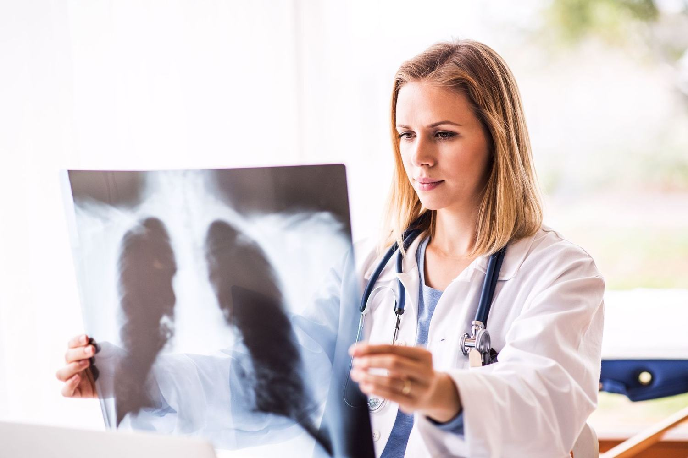
Photo: Badr Al Samaa GroupPulmonology
Some of the important conditions treated here include allergy and asthma, COPD, occupational lung diseases and TB. Facilities and services provided here include bronchoscopy, lung function tests (PFT) and a Smoking Cessation Clinic.
Explore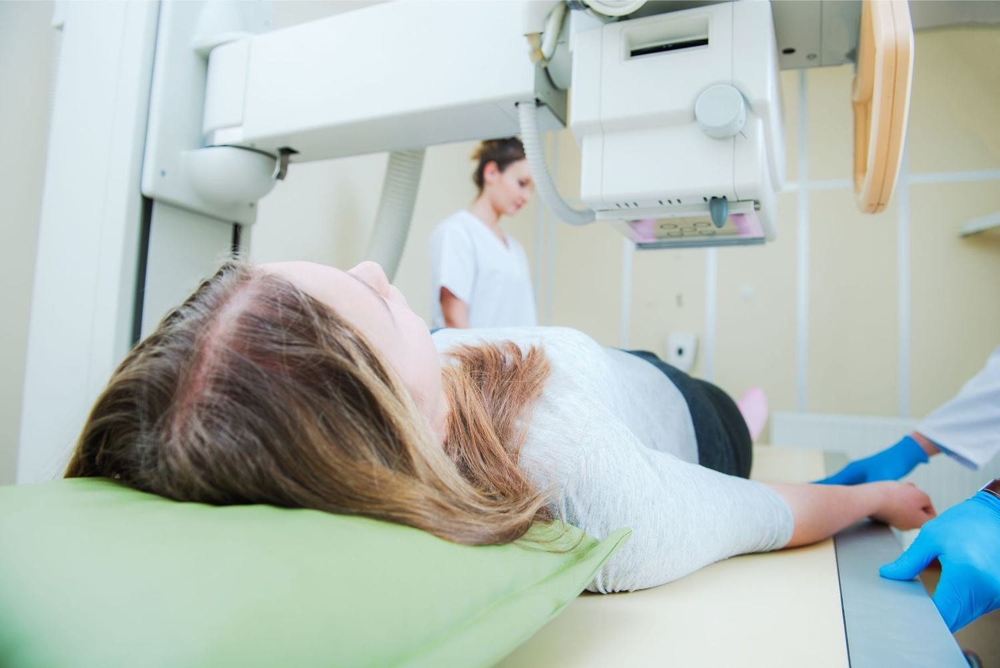
Photo: Badr Al Samaa GroupRadiology
The Radiology Department at Badr Al Samaa provides comprehensive diagnostic and advanced imaging services to support accurate diagnosis, treatment planning, and ongoing patient care. As a premier hospital for CT scan and other diagnostic services, we are equipped with modern imaging technology and supported by experienced radiologists and technologists to deliver high-quality imaging solutions across a wide range of medical specialties.
Explore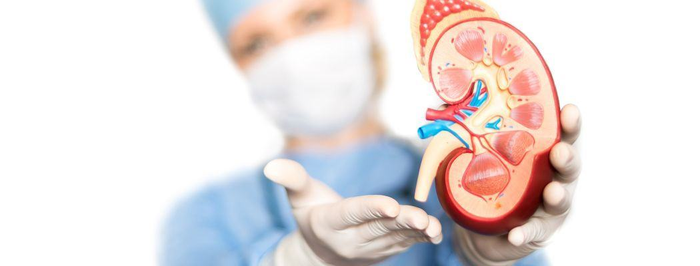
Photo: Badr Al Samaa GroupUrology & Andrology
The Urology & Andrology Department at Badr Al Samaa Hospital provides comprehensive diagnosis and treatment for disorders affecting the urinary tract and male reproductive system. Supported by experienced urologists, advanced technology, and modern diagnostic facilities, we deliver personalized care for a wide range of urological and andrological conditions.
Explore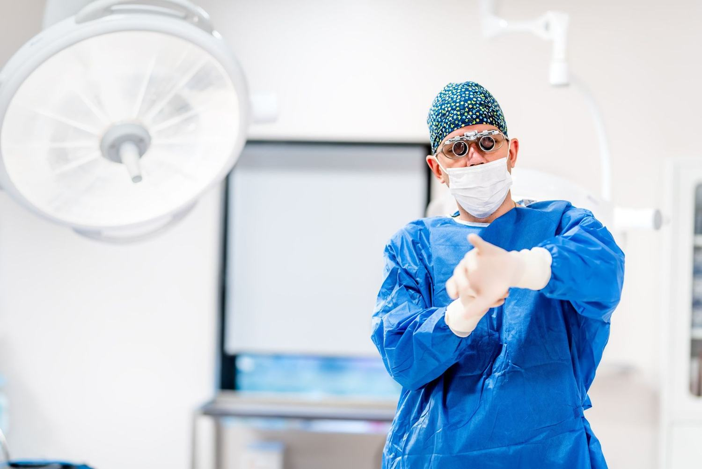
Photo: Badr Al Samaa GroupGeneral Surgery
High efficiency, modular operating theatres with HEPA filtration system offer excellent and hassle-free usage for the latest surgical procedures being practiced in the world today. There are separate theatres available for minor procedures as well as for complex, high-risk major surgeries.
Explore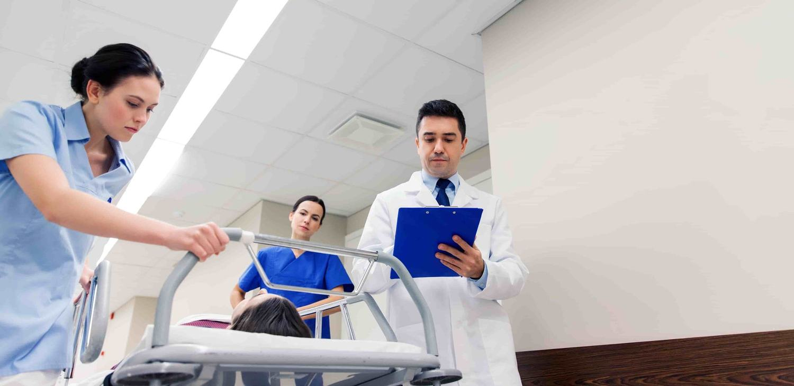
Photo: Badr Al Samaa GroupEmergency and Critical Care
The Emergency & Critical Care Department at Badr Al Samaa Hospital provides round-the-clock emergency medical services and advanced critical care support for patients with life-threatening illnesses, severe injuries, and complex medical conditions. Our highly trained emergency physicians, critical care specialists, nurses, and support teams at ICU Services work together to deliver rapid assessment, timely intervention, and continuous monitoring for both adult and paediatric patients.
Explore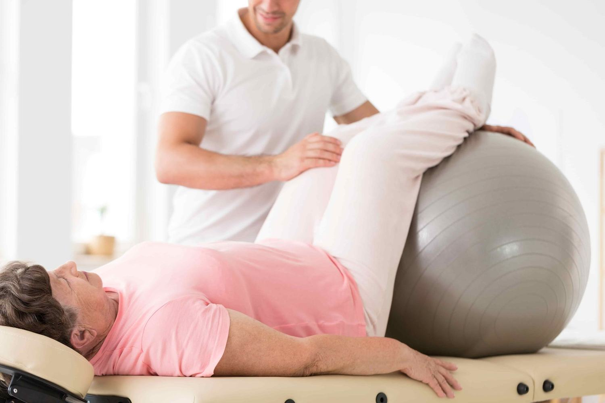
Photo: Badr Al Samaa GroupPhysiotherapy
The physiotherapy department at Badr Al Samaa Group of Hospitals deals with the care and physical rehabilitation of patients who develops disability, pain or ailment due to various medical reasons. Physiotherapy deals with patients of various specialities like orthopaedics, cardiology, rheumatology, obstetrics & gynaecology, paediatric & neonatology, neurology, and gastroenterology among others.
ExploreDietetics
Dieticians are specialised healthcare professionals licensed to assess, diagnose and treat patients on their nutritional problems in accordance with their underlying medical conditions and individual needs. They provide nutritional screening and consultation for out-patients as per request of treating physicians. They also screen all in-patients and arrange special diets according to their medical needs.
Explore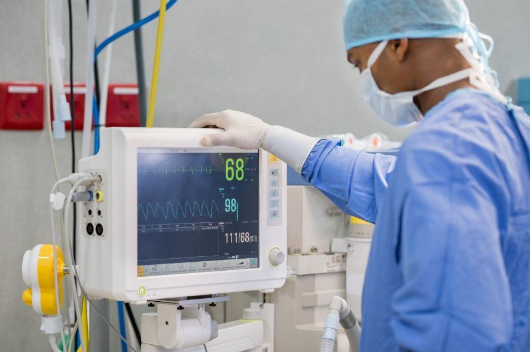
Photo: Badr Al Samaa GroupGeneral & Laparoscopic Surgery
High efficiency, modular operating theatres with HEPA filtration system offer excellent and hassle-free usage for the latest surgical procedures being practiced in the world today. There are separate theatres available for minor procedures as well as for complex, high-risk major surgeries.
ExplorePlastic, Reconstructive & Cosmetic Surgery
The Plastic, Reconstructive & Cosmetic Surgery Department at Badr Al Samaa Hospital provides advanced surgical and non-surgical treatments designed to restore function, correct deformities, enhance appearance, and improve overall quality of life. Our department is led by highly experienced specialists with extensive expertise in reconstructive, aesthetic, craniofacial, hand, burn, and cosmetic surgery, offering comprehensive care for both adults and children.
ExploreMicrobiology
Explore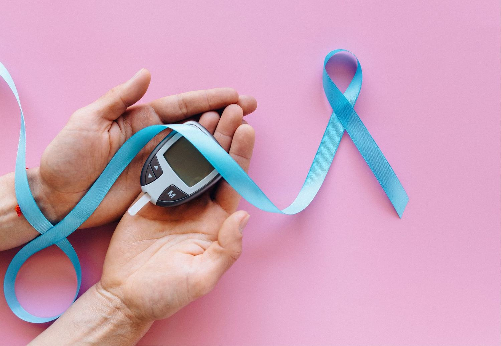
Photo: Badr Al Samaa GroupDiabetics & Family Medicine
The Diabetes & Family Medicine Department at Badr Al Samaa provides comprehensive healthcare services for individuals and families, with a special focus on diabetes prevention, diagnosis, treatment, and long-term disease management. Our experienced physicians are committed to delivering personalized, patient-centred care that promotes lifelong health and well-being.
Explore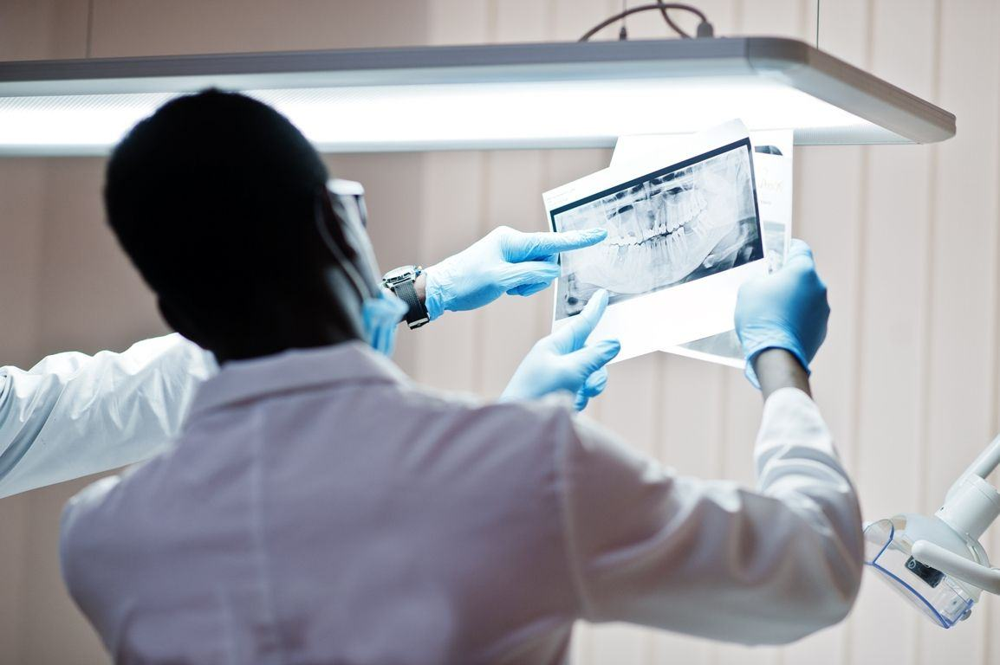
Photo: Badr Al Samaa GroupOral, Maxillofacial & Dental Surgery
The Oral, Maxillofacial & Dental Surgery Department at Badr Al Samaa Hospital provides specialized care for conditions affecting the teeth, jaws, mouth, face, and neck. Our experienced oral and maxillofacial surgeons and dental specialists offer comprehensive diagnostic, surgical, reconstructive, and rehabilitative treatments using advanced techniques and modern technology.
Explore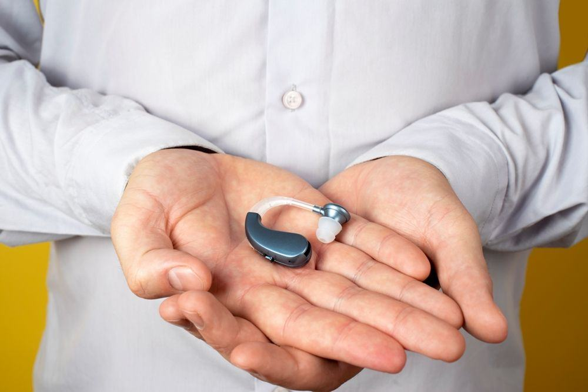
Photo: Badr Al Samaa GroupAudiology
Audiology is the testing and management of hearing and balance problems in people of all ages. Early identification of hearing loss and ear diseases is key to effective management in all age groups.
Explore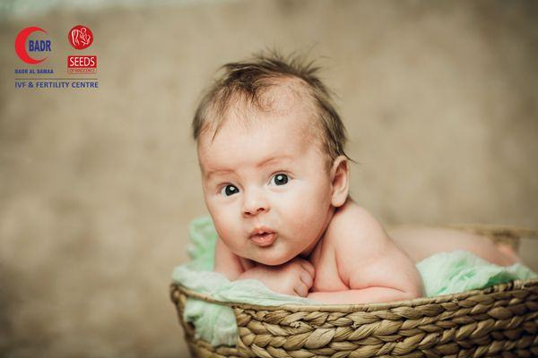
Photo: Badr Al Samaa GroupIn vitro fertilization (IVF)
Badr Seeds of Innocence IVF & Fertility Centre at Badr Al Samaa Premium Medical Centre, Mabella is a Centre of Excellence for Advanced IVF and Reproductive Genetics, offering comprehensive fertility care supported by state-of-the-art technology, advanced laboratory facilities, and a team of highly experienced fertility specialists. We are committed to helping individuals and couples overcome fertility challenges through personalized treatment plans and compassionate care.
Explore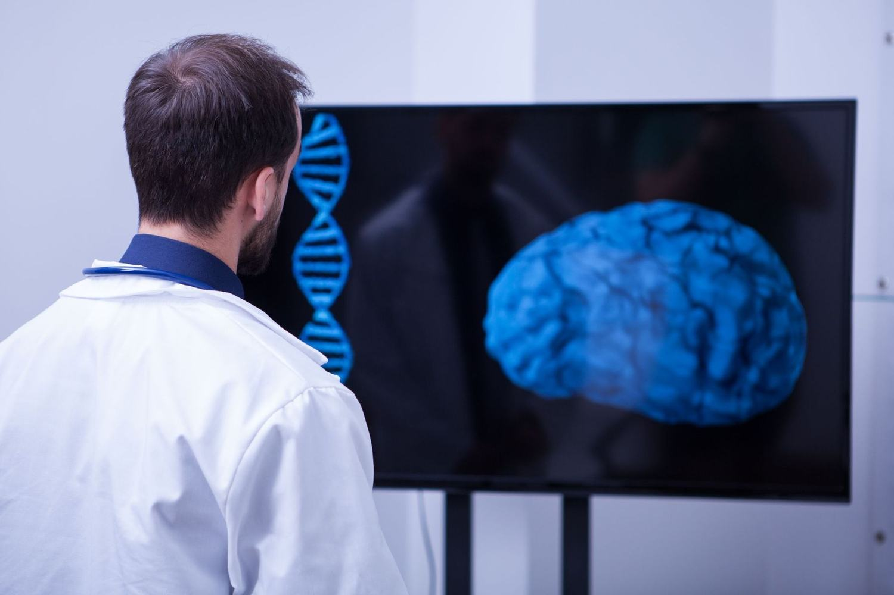
Photo: Badr Al Samaa GroupNeuro Surgery
Department of Neurosurgery always ensures you are treated by well qualified neurosurgeon having most appropriate expertise for your condition. Working with a multidisciplinary team, you can be rest assured that our specialist surgeons will adopt a holistic approach to your treatment, taking in your individual needs in order to get you on your way to a speedy recovery.
Explore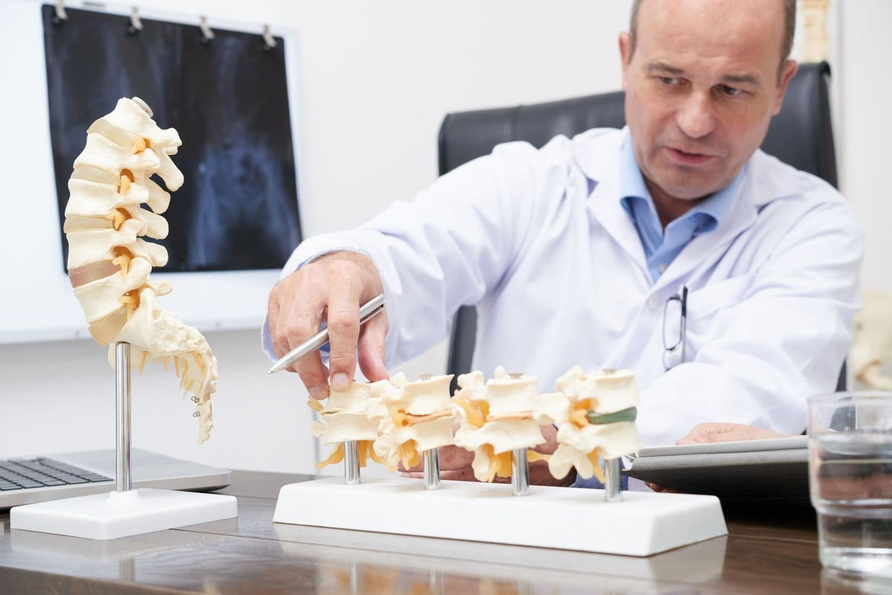
Photo: Badr Al Samaa GroupSpine Surgery
The department of Spine Surgery has the presence of a full-time spine surgeon for timely emergency managements and interventions. The Spine Unit offers comprehensive non-surgical and surgical treatments for the full spectrum of spinal disorders and spinal injuries and emergencies. Our experts in spine care specialize in disorders including degenerative conditions of the spine, such as cervical or lumbar spinal stenosis, cervical or lumbar disc herniation, and scoliosis or adult deformity of the spine and spinal fixation and augmentation.
Explore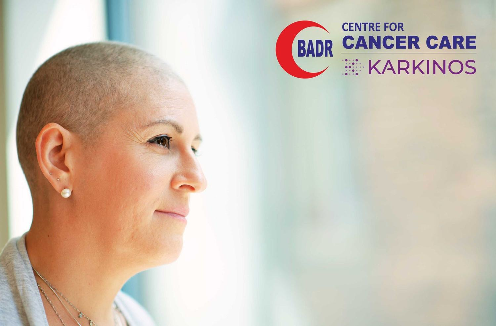
Photo: Badr Al Samaa GroupOncology
Badr-Karkinos Centre for Cancer Care is a comprehensive and multidisciplinary oncology department at Badr Al Samaa Group of Hospitals which is a part of a Distributed Cancer Care Network (DCCN). Badr Al Samaa Group of Hospitals join hands with Karkinos Healthcare from India to provide world class, evidence based and personalized cancer care in Oman with the help of digital technology. Karkinos Healthcare is a purpose driven technology-led oncology platform, focused on designing and delivering bespoke solutions for cancer care.
ExploreBook an appointment